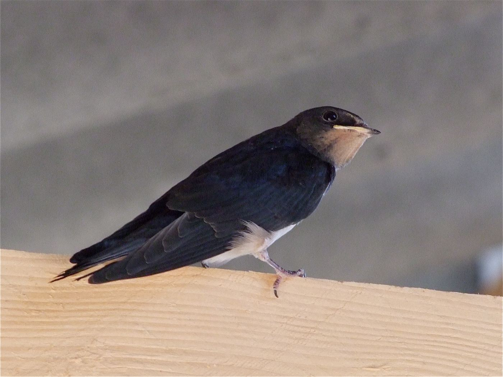

Wirbeltiere › Vögel › Sperlingsvögel › Schwalben
Hirundo rustica

Was du siehst: Eine junge Rauchschwalbe kurz nach dem Ausfliegen – die langen Schwanzspieße wachsen erst noch.
Foto: Michael Baur · CC BY-NC
Lange, spitze Flügel und ein tief gegabelter Schwanz machen die Rauchschwalbe zur Kunstfliegerin. Sie jagt dicht über Wiesen und Wasser, fängt Insekten im Flug und trinkt sogar im Flug, indem sie über die Wasseroberfläche streift.
Für ihr Nest sammelt die Schwalbe feuchten Lehm an Pfützen – Schnabelvoll für Schnabelvoll, viele hundert Mal. Die Klümpchen klebt sie mit Speichel an einen Balken im Stall. Ohne Pfützen und offene Stalltüren findet sie keinen Brutplatz.
Wo Kühe und Pferde stehen, gibt es viele Fliegen – und warme Ställe zum Brüten. Seit es weniger kleine Höfe mit Vieh gibt, sind auch die Rauchschwalben seltener geworden.
Foto Michael Baur, CC BY-NC · Texte Fauna Mibaso. Die Artseite ist Endpunkt im Stammbaum und Nachschlagewerk zum Vogelpass auf bio.mibaso.de.